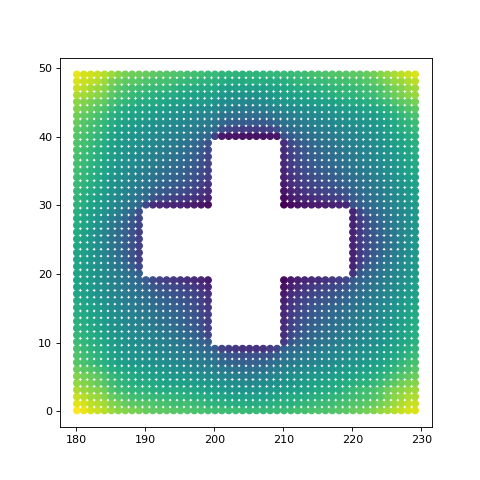
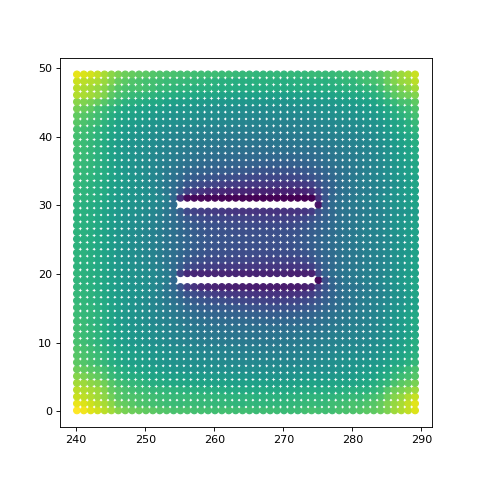

Visualize Spatial View¶
import matplotlib.pyplot as plt
from mpl_toolkits.mplot3d import Axes3D
from dhart.geometry import LoadOBJ
from dhart.raytracer import EmbreeBVH
from dhart.graphgenerator import GenerateGraph
from dhart.viewanalysis import SphericalViewAnalysis, SphericalViewAnalysisAggregate, AggregationType
import dhart as hfpy
# Get a sample model path
obj_path = hfpy.get_sample_model("VisibilityTestCases.obj")
# Load the obj file
obj = LoadOBJ(obj_path)
# Create a BVH
bvh = EmbreeBVH(obj, True)
# Set the graph parameters
# Test examples are failing on 1. Seems to be embree failing on edge intersection
start_point = (1.1 , 1.1, 20) #offset X by 60 for each new model
spacing = (1, 1, 5)
max_nodes = 10000
up_step, down_step = 0.1, 0.1
up_slope, down_slope = 1, 1
max_step_connections = 1
# Generate the Graph
graph = GenerateGraph(bvh, start_point, spacing, max_nodes,
up_step,up_slope,down_step,down_slope,
max_step_connections, cores=-1)
# Get the nodes of the graph as a list of x,y,z,type,id tuples
nodes = graph.getNodes()
print(len(nodes))
height = 1.7 # Set a height offset to cast rays from the points
ray_count = 1500 # Set the number of rays to use per node
scores = SphericalViewAnalysisAggregate(bvh, nodes, ray_count, height,
upward_fov = 20, downward_fov=20,
agg_type=AggregationType.AVERAGE)
# Plot the graph using visibility graph as the colors
fig = plt.figure(figsize=(6,6))
plt.scatter(nodes['x'], nodes['y'], c=scores)
plt.show()

We can see all of the example cases in the test file by regenerating the graph by our known model offset
for i in range(5):
# Set the graph parameters
# Test examples are failing on 1. Seems to be embree failing on edge intersection
start_point = (1.1 + (60*i) , 1.1, 20) #offset X by 60 for each new model
# Generate the Graph
graph = GenerateGraph(bvh, start_point, spacing, max_nodes,
up_step,up_slope,down_step,down_slope,
max_step_connections, cores=-1)
# Convert the graph to a CSR
csr_graph = graph.CompressToCSR()
# Get the nodes of the graph as a list of x,y,z,type,id tuples
nodes = graph.getNodes()
# Calculate view analysis on the new graph
scores = SphericalViewAnalysisAggregate(bvh, nodes, ray_count, height,
upward_fov = 20, downward_fov=20,
agg_type=AggregationType.AVERAGE)
# Plot the graph using visibility graph as the colors
fig = plt.figure(figsize=(6,6))
plt.scatter(nodes['x'], nodes['y'], c=scores)
plt.show()



